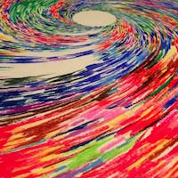
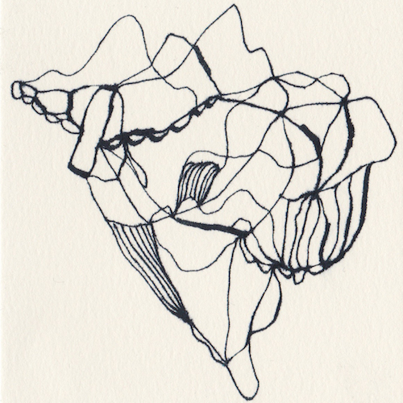

展覧会情報
相原信洋七回忌追悼映像展

元祖サイケデリックアニメーションのデジタルリマスター上映
相原信洋は、1944 年に神奈川県に生まれ、デザイン学校で学んだのち、スタジオゼロ やオープロダクションで TV アニメのアニメーターとしての仕事に取り組んでゆく。そ の一方で、1965 年より個人としてのアニメーション制作も開始する。
相原のフィルモグラフィー には、実験的なドキュメンタリーと呼ぶしかない『シェルター』(1980)および『マイ・シェ ルター』(1981)や、家屋の壁面や屋根に映写機からの映像を投影する『リンゴと少女』(1982)、女性のヌードと夕暮れの野原が多重露光される『とんぼ』(1988)など、異 質性を持った作品が幾つも存在する。安易な分類や解釈を拒否する、狭義のアニメーショ ン作家にとどまらない異質性を持ったアニメーション作家、それが相原信洋なのだと思う。（阪本裕文氏フライヤー寄稿文より抜粋）
会期
2017年4月28日（金）〜30日（日）
上映スケジュール
28日（金） ・19:00
29日（土） ・17:00 ・18:30（ゲストトーク） ・19:00
30日（日） ・16:00 ・18:00
※各回 同プログラム
ゲストトーク：阪本 裕文（映像研究者）× 大西 宏志（京都造形芸術大学 教授）
入場料
1,000円
※ゲストトークは無料
感謝
大島 治
阪本 裕文
相内 啓司
※今回上映される作品は JSPS 科研費 15K02184 の助成を受けデジタルリマスターしたものです。
折りたたむ
上映プログラム
やまかがし(1971)
妄動(1974)
STONE No.1(1975)
STONE(1975)
STONE アウトテイク(1975)
カルマ(1977)
アンダー・ザ・サン(1979)
MY SHELTER(1981)
映像(かげ)(1987)
GAVORA(1989)
MASK(1991)
SPIN(1993)
MEMORY OF CLOUD(1997)
The Third Eye(1999)
WIND(2001)
LOTUS(2007)
※上映作品は変更される場合があります。
近日開催
鈴鹿芳康 YASU SUZUKA PINHOLE PHOTO EXHIBITION 個展 聖地 sacred places

 KG+ ASSOCIATED PROGRAM
KG+ ASSOCIATED PROGRAM
風曼荼羅 WIND MANDALA -日本の聖地より- at galleryMain
風曼荼羅 WIND MANDALA -世界の聖地より- at Lumen gallery
◎特別展示企画 at Lumen gallery
鈴鹿芳康の30年にわたるピンホール写真作品から厳選された特装版ポートフォリオを展示・販売致します。
会期
2017年5月3日(水)〜14日(日)
休廊日：5月8日(月)・9日(火)
時間
13:00ー19:30 ＊最終日は18:00まで
会場
Lumen gallery + galleryMain
入場料
500円
リンク
鈴鹿芳康 Official web site jp.yasusuzuka.com
京都を拠点に世界中で活動を行っている鈴鹿芳康の公式ホームページです。
It is an official homepage of Yasu Suzuka who is acting all over the world based on Kyoto.
主催：galleryMain, Lumen gallery
協力：Awagami Factory
折りたたむ
鈴鹿芳康〈Yasu suzuka〉

前世紀は、科学と技術の急激な進歩をもたらしたが、その一方で、欲望が異常に肥大し、人類はいまだかってない危機に直面した。国家・民族・宗教のはてしない対立と悲しむべき争いの連続であった。
もし我々の未来にとって、さらに芸術が求められるとするならば、まず人間が生きることはなにか、その根本に生命とはなにか、さらに地球上に生存する人類の共生について、根源的な問題に思いを向けなければならない。
その作業はまず、人間が古代から今日にいたるまで、万物の一つとして、全体と調和して生かされてきた事実を謙虚に認めることから始まるであろう。
プロフィール
1947年
神奈川県に生まれる
1966-1968年
多摩美術大学油絵科で学ぶ
1973-1975年
京都市立芸術大学版画研究室講師
1975年
フルブライト研究員奨学金を得てサンフランシスコ・アート・インスティテュート写真科留学
1984-1991年
京都芸術短期大学助教授
1991-2012年
京都造形芸術大学教授
2002-2007年
京都大学客員教授（学術情報メディアセンター）
2004-2012年
東京工芸大学客員教授
2007-2010年
ピンホール写真芸術学会会長
現在
京都造形芸術大学名誉教授
ピンホール写真芸術学会名誉会長
平行宇宙

オガサワラミチ個展〜ドローイング & オブジェ
会期
2017年5月16日(火)〜21日(日)
時間
13:00 - 19:30
リンク
gallery ogasawara
折りたたむ
オガサワラミチ プロフィール
京都を中心に活動中の画家
京都精華大学ビジュアルコミュニケーションデザインコース卒業
目に映る光景、頭に浮かぶ映像は、面でなく、線で見えてくる。その線を、日々描きとめている。
主な展覧会履歴
個展
2014 martian drawing show ＋アーカイブ展（GALLERY 9 kyoto/ 京都）
2013 無窮螺線（gallery near / 京都）
2012 回帰線（gallery near / 京都）
2011 ∞ムゲンダイ（gallery Main / 京都）
2010 幻覚症状（cafe'n bar ハライソ / 京都）
2010 メインディッシュ（gallery Main / 京都）
2010 m's S room（gallery near / 京都）
2010 mush-room（翔 / 京都）
2010 真菌類（ cocoro / 大阪）
2010 チョコレート依存症（Fint,takk! / 京都）
2009 森ガール（gallery near / 京都）
2009 メランコリー（mizuca / 京都）
2009 トリ（cube space club / 東京）
2008 candy maker（mizuca / 京都）
2007 装飾動物（liberta / 京都）
2007 フルーツパーラー（liberta / 京都）
2007 chocolatier（mizuca / 京都）
2006 オータムイーティングコレクション（liberta / 京都）
2006 シャラの木（liberta / 京都）
2005 ラグジュアリー（liberta / 京都）
2005 白昼夢（mizuca / 京都）
2005 夢遊（liberta / 京都）
2005 コトハジメ（ichi・man・ben / 京都）
2004 装展（neutron / 京都）
グループ展etc.
2014 TAKE OUT ART！(galery near / 京都)
2014 きのこワンダーランド(東急ハンズ / 横浜)
2014 ドキドキ！きのこフェスティバル (阪神百貨店 /大阪)
2014 SICF ( スパイラルホール /東京・青山)
2013 TAKE OUT ART！(galery near / 京都)
2013 ドキドキ！きのこフェスティバル ( 阪神百貨店 /大阪)
2013 くる年サンライズ(阪急うめだ本店 / 大阪)
2012 ゆく年サンセット(阪急うめだ本店 / 大阪)
2012 TAKE OUT ART！(galery near / 京都)
2012 gallery near 3周年企画展(gallery near / 京都)
2012 GEISAI #16 出展
2011 公開制作展(gallery near / 京都)
2011 near 2nd Anniversary Exhibition「対 -tsui-」(gallery near / 京都)
2011 オガサワラミチ×gallery near「キノコレ -kinoko exhibition-」(gallery near / 京都)
2010 quesorvel sweet room（THC / 東京）
2008 秋の作品展（cube space club / 東京）
2005 エホンノミライ（neutron / 京都）
2004 エホンノミライ（neutron / 京都）
2015 “tone” (Lumen gallery / 京都)
セイリー育緒プロデュース アイパッドアーミー企画展vol.1
「ママン」～あなたは愛でずぶ濡れになる～ 加地 猛展

アイパッドアーミーとは.......
プロデュースを手掛けるセイリー育緒のコトバ。「私にとって写真=フィルム。これは絶対。でもある日、加地猛のオカン画像を見てショックを受け、映像の表現ツールとしてipadやスマホの身軽な可能性を追求してみたくなった。つまり写真家を目指さない人間の単発的な画像作品を展示表現していく試みが、このアイパッドアーミーなんです。」
つまり、セイリー育緒 プロデュース アイパッドアーミーとは 、面白いデジタル画像を撮りためてしまった場合に所属できる非写真家集団なのである。
会期
2017年5月31日(水)〜6月4日(日)
時間
13:00 - 19:30
リンク
Film Camera Revival
折りたたむ
作家紹介【加地 猛 （かじたけし）】
中古レコード屋 100000トンアローントコ店主。 写真に興味はなくカメラも持ってないが、ipadでオカンは撮る男。
今回はそのオカン画像を惜しみなく披露する。
アイパッドアーミー所属。
copyright by 光束舎 2016 last update 2016/11/8